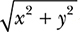

1
Working with Numbers

Let’s take our first steps toward using Python to explore the world of math and science. We’ll keep it simple now so you can get a handle on using Python itself. We’ll start by performing basic mathematical operations, and then we’ll write simple programs for manipulating and understanding numbers. Let’s get started!
Basic Mathematical Operations
The Python interactive shell is going to be our friend in this book. Start the Python 3 IDLE shell and say “hello” (see Figure 1-1) by typing print('Hello IDLE') and then pressing ENTER. (For instructions on how to install Python and start IDLE, see Appendix A.) IDLE obeys your command and prints the words back to the screen. Congratulations—you just wrote a program!
When you see the >>> prompt again, IDLE is ready for more instructions.
Figure 1-1: Python 3 IDLE shell
Python can act like a glorified calculator, doing simple computations. Just type an expression and Python will evaluate it. After you press ENTER, the result appears immediately.
Give it a try. You can add and subtract numbers using the addition (+) and subtraction (–) operators. For example:
>>> 1 + 2
3
>>> 1 + 3.5
4.5
>>> -1 + 2.5
1.5
>>> 100 – 45
55
>>> -1.1 + 5
3.9
To multiply, use the multiplication (*) operator:
>>> 3 * 2
6
>>> 3.5 * 1.5
5.25
To divide, use the division (/) operator:
>>> 3 / 2
1.5
>>> 4 / 2
2.0
As you can see, when you ask Python to perform a division operation, it returns the fractional part of the number as well. If you want the result in the form of an integer, with any decimal values removed, you should use the floor division (//) operator:
>>> 3 // 2
1
The floor division operator divides the first number by the second number and then rounds down the result to the next lowest integer. This becomes interesting when one of the numbers is negative. For example:
>>> -3 // 2
-2
The final result is the integer lower than the result of the division operation (-3/2 = -1.5, so the final result is -2).
On the other hand, if you want just the remainder, you should use the modulo (%) operator:
>>> 9 % 2
1
You can calculate the power of numbers using the exponential (**) operator. The examples below illustrate this:
>>> 2 ** 2
4
>>> 2 ** 10
1024
>>> 1 ** 10
1
We can also use the exponential symbol to calculate powers less than 1. For example, the square root of a number n can be expressed as n1/2 and the cube root as n1/3:
>>> 8 ** (1/3)
2.0
As this example shows, you can use parentheses to combine mathematical operations into more complicated expressions. Python will evaluate the expression following the standard PEMDAS rule for the order of calculations—parentheses, exponents, multiplication, division, addition, and subtraction. Consider the following two expressions—one without parentheses and one with:
>>> 5 + 5 * 5
30
>>> (5 + 5) * 5
50
In the first example, Python calculates the multiplication first: 5 times 5 is 25; 25 plus 5 is 30. In the second example, the expression within the parentheses is evaluated first, just as we’d expect: 5 plus 5 is 10; 10 times 5 is 50.
These are the absolute basics of manipulating numbers in Python. Let’s now learn how we can assign names to numbers.
Labels: Attaching Names to Numbers
As we start designing more complex Python programs, we’ll assign names to numbers—at times for convenience, but mostly out of necessity. Here’s a simple example:
➊ >>> a = 3
>>> a + 1
4
➋ >>> a = 5
>>> a + 1
6
At ➊, we assign the name a to the number 3. When we ask Python to evaluate the result of the expression a + 1, it sees that the number that a refers to is 3, and then it adds 1 and displays the output (4). At ➋, we change the value of a to 5, and this is reflected in the second addition operation. Using the name a is convenient because you can simply change the number that a points to and Python uses this new value when a is referred to anywhere after that.
This kind of name is called a label. You may have been introduced to the term variable to describe the same idea elsewhere. However, considering that variable is also a mathematical term (used to refer to something like x in the equation x + 2 = 3), in this book I use the term variable only in the context of mathematical equations and expressions.
Different Kinds of Numbers
You may have noticed that I’ve used two kinds of numbers to demonstrate the mathematical operations—numbers without a decimal point, which you already know as integers, and numbers with a decimal point, which programmers call floating point numbers. We humans have no trouble recognizing and working with numbers whether they’re written as integers, floating point decimals, fractions, or roman numerals. But in some of the programs that we write in this book, it will only make sense to perform a task on a particular type of number, so we’ll often have to write a bit of code to have the programs check whether the numbers we input are of the right type.
Python considers integers and floating point numbers to be different types. If you use the function type(), Python will tell you what kind of number you’ve just input. For example:
>>> type(3)
<class 'int'>
>>> type(3.5)
<class 'float'>
>>> type(3.0)
<class 'float'>
Here, you can see that Python classifies the number 3 as an integer (type 'int') but classifies 3.0 as a floating point number (type 'float'). We all know that 3 and 3.0 are mathematically equivalent, but in many situations, Python will treat these two numbers differently because they are two different types.
Some of the programs we write in this chapter will work properly only with an integer as an input. As we just saw, Python won’t recognize a number like 1.0 or 4.0 as an integer, so if we want to accept numbers like that as valid input in these programs, we’ll have to convert them from floating point numbers to integers. Luckily, there’s a function built in to Python that does just that:
>>> int(3.8)
3
>>> int(3.0)
3
The function int() takes the input floating point number, gets rid of anything that comes after the decimal point, and returns the resulting integer. The float() function works similarly to perform the reverse conversion:
>>> float(3)
3.0
float() takes the integer that was input and adds a decimal point to turn it into a floating point number.
Working with Fractions
Python can also handle fractions, but to do that, we’ll need to use Python’s fractions module. You can think of a module as a program written by someone else that you can use in your own programs. A module can include classes, functions, and even label definitions. It can be part of Python’s standard library or distributed from a third-party location. In the latter case, you would have to install the module before you could use it.
The fractions module is part of the standard library, meaning that it’s already installed. It defines a class Fraction, which is what we’ll use to enter fractions into our programs. Before we can use it, we’ll need to import it, which is a way of telling Python that we want to use the class from this module. Let’s see a quick example—we’ll create a new label, f, which refers to the fraction 3/4:
➊ >>> from fractions import Fraction
➋ >>> f = Fraction(3, 4)
➌ >>> f
Fraction(3, 4)
We first import the Fraction class from the fractions module ➊. Next, we create an object of this class by passing the numerator and denominator as parameters ➋. This creates a Fraction object for the fraction 3/4. When we print the object ➌, Python displays the fraction in the form Fraction(numerator, denominator).
The basic mathematical operations, including the comparison operations, are all valid for fractions. You can also combine a fraction, an integer, and a floating point number in a single expression:
>>> Fraction(3, 4) + 1 + 1.5
3.25
When you have a floating point number in an expression, the result of the expression is returned as a floating point number.
On the other hand, when you have only a fraction and an integer in the expression, the result is a fraction, even if the result has a denominator of 1.
>>> Fraction(3, 4) + 1 + Fraction(1/4)
Fraction(2, 1)
Now you know the basics of working with fractions in Python. Let’s move on to a different kind of number.
Complex Numbers
The numbers we’ve seen so far are the so-called real numbers. Python also supports complex numbers with the imaginary part identified by the letter j or J (as opposed to the letter i used in mathematical notation). For example, the complex number 2 + 3i would be written in Python as 2 + 3j:
>>> a = 2 + 3j
>>> type(a)
<class 'complex'>
As you can see, when we use the type() function on a complex number, Python tells us that this is an object of type complex.
You can also define complex numbers using the complex() function:
>>> a = complex(2, 3)
>>> a
(2 + 3j)
Here we pass the real and imaginary parts of the complex number as two arguments to the complex() function, and it returns a complex number.
You can add and subtract complex numbers in the same way as real numbers:
>>> b = 3 + 3j
>>> a + b
(5 + 6j)
>>> a - b
(-1 + 0j)
Multiplication and division of complex numbers are also carried out similarly:
>>> a * b
(-3 + 15j)
>>> a / b
(0.8333333333333334 + 0.16666666666666666j)
The modulus (%) and the floor division (//) operations are not valid for complex numbers.
The real and imaginary parts of a complex number can be retrieved using its real and imag attributes, as follows:
>>> z = 2 + 3j
>>> z.real
2.0
>>> z.imag
3.0
The conjugate of a complex number has the same real part but an imaginary part with an equal magnitude and an opposite sign. It can be obtained using the conjugate() method:
>>> z.conjugate()
(2 - 3j)
Both the real and imaginary parts are floating point numbers. Using the real and imaginary parts, you can then calculate the magnitude of a complex number with the following formula, where x and y are the real and imaginary parts of the number, respectively: . In Python, this would look like the following:
>>> (z.real ** 2 + z.imag ** 2) ** 0.5
3.605551275463989
A simpler way to find the magnitude of a complex number is with the abs() function. The abs() function returns the absolute value when called with a real number as its argument. For example, abs(5) and abs(-5) both return 5. However, for complex numbers, it returns the magnitude:
>>> abs(z)
3.605551275463989
The standard library’s cmath module (cmath for complex math) provides access to a number of other specialized functions to work with complex numbers.
Getting User Input
As we start to write programs, it will help to have a nice, simple way to accept user input via the input() function. That way, we can write programs that ask a user to input a number, perform specific operations on that number, and then display the results of the operations. Let’s see it in action:
➊ >>> a = input()
➋ 1
At ➊, we call the input() function, which waits for you to type something, as shown at ➋, and press ENTER. The input provided is stored in a:
>>> a
➌ '1'
Notice the single quotes around 1 at ➌. The input() function returns the input as a string. In Python, a string is any set of characters between two quotes. When you want to create a string, either single quotes or double quotes can be used:
>>> s1 = 'a string'
>>> s2 = "a string"
Here, both s1 and s2 refer to the same string.
Even if the only characters in a string are numbers, Python won’t treat that string as a number unless we get rid of those quotation marks. So before we can perform any mathematical operations with the input, we’ll have to convert it into the correct number type. A string can be converted to an integer or floating point number using the int() or float() function, respectively:
>>> a = '1'
>>> int(a) + 1
2
>>> float(a) + 1
2.0
These are the same int() and float() functions we saw earlier, but this time instead of converting the input from one kind of number to another, they take a string as input ('1') and return a number (2 or 2.0). It’s important to note, however, that the int() function cannot convert a string containing a floating point decimal into an integer. If you take a string that has a floating point number (like '2.5' or even '2.0') and input that string into the int() function, you’ll get an error message:
>>> int('2.0')
Traceback (most recent call last):
File "<pyshell#26>", line 1, in <module>
int('2.0')
ValueError: invalid literal for int() with base 10: '2.0'
This is an example of an exception—Python’s way of telling you that it cannot continue executing your program because of an error. In this case, the exception is of the type ValueError. (For a quick refresher on exceptions, see Appendix B.)
Similarly, when you supply a fractional number such as 3/4 as an input, Python cannot convert it into an equivalent floating point number or integer. Once again, a ValueError exception is raised:
>>> a = float(input())
3/4
Traceback (most recent call last):
File "<pyshell#25>", line 1, in <module>
a=float(input())
ValueError: could not convert string to float: '3/4'
You may find it useful to perform the conversion in a try...except block so that you can handle this exception and alert the user that the program has encountered an invalid input. We’ll look at try...except blocks next.
Handling Exceptions and Invalid Input
If you’re not familiar with try...except, the basic idea is this: if you execute one or more statements in a try...except block and there’s an error while executing, your program will not crash and print a Traceback. Instead, the execution is transferred to the except block, where you can perform an appropriate operation, for instance, printing a helpful error message or trying something else.
This is how you would perform the above conversion in a try...except block and print a helpful error message on invalid input:
>>> try:
a = float(input('Enter a number: '))
except ValueError:
print('You entered an invalid number')
Note that we need to specify the type of exception we want to handle. Here, we want to handle the ValueError exception, so we specify it as except ValueError.
Now, when you give an invalid input, such as 3/4, it prints a helpful error message, as shown at ➊:
Enter a number: 3/4
➊ You entered an invalid number
You can also specify a prompt with the input() function to tell the user what kind of input is expected. For example:
>>> a = input('Input an integer: ')
The user will now see the message hinting to enter an integer as input:
Input an integer: 1
In many programs in this book, we’ll ask the user to enter a number as input, so we’ll have to make sure we take care of conversion before we attempt to perform any operations on these numbers. You can combine the input and conversion in a single statement, as follows:
>>> a = int(input())
1
>>> a + 1
2
This works great if the user inputs an integer. But as we saw earlier, if the input is a floating point number (even one that’s equivalent to an integer, like 1.0), this will produce an error:
>>> a = int(input())
1.0
Traceback (most recent call last):
File "<pyshell#42>", line 1, in <module>
a=int(input())
ValueError: invalid literal for int() with base 10: '1.0'
In order to avoid this error, we could set up a ValueError catch like the one we saw earlier for fractions. That way the program would catch floating point numbers, which won’t work in a program meant for integers. However, it would also flag numbers like 1.0 and 2.0, which Python sees as floating point numbers but that are equivalent to integers and would work just fine if they were entered as the right Python type.
To get around all this, we will use the is_integer() method to filter out any numbers with a significant digit after the decimal point. (This method is only defined for float type numbers in Python; it won’t work with numbers that are already entered in integer form.)
Here’s an example:
>>> 1.1.is_integer()
False
Here, we call the method is_integer() to check if 1.1 is an integer, and the result is False because 1.1 really is a floating point number. On the other hand, when the method is called with 1.0 as the floating point number, the result is True:
>>> 1.0.is_integer()
True
We can use is_integer() to filter out noninteger input while keeping inputs like 1.0, which is expressed as a floating point number but is equivalent to an integer. We’ll see how the method would fit into a larger program a bit later.
Fractions and Complex Numbers as Input
The Fraction class we learned about earlier is also capable of converting a string such as '3/4' to a Fraction object. In fact, this is how we can accept a fraction as an input:
>>> a = Fraction(input('Enter a fraction: '))
Enter a fraction: 3/4
>>> a
Fraction(3, 4)
Try entering a fraction such as 3/0 as input:
>>> a = Fraction(input('Enter a fraction: '))
Enter a fraction: 3/0
Traceback (most recent call last):
File "<pyshell#2>", line 1, in <module>
a = Fraction(input('Enter a fraction: '))
File "/usr/lib64/python3.3/fractions.py", line 167, in __new__
raise ZeroDivisionError('Fraction(%s, 0)' % numerator)
ZeroDivisionError: Fraction(3, 0)
The ZeroDivisionError exception message tells you (as you already know) that a fraction with a denominator of 0 is invalid. If you’re planning on having users enter fractions as input in one of your programs, it’s a good idea to always catch such exceptions. Here is how you can do something like that:
>>> try:
a = Fraction(input('Enter a fraction: '))
except ZeroDivisionError:
print('Invalid fraction')
Enter a fraction: 3/0
Invalid fraction
Now, whenever your program’s user enters a fraction with 0 in the denominator, it’ll print the message Invalid fraction.
Similarly, the complex() function can convert a string such as '2+3j' into a complex number:
>>> z = complex(input('Enter a complex number: '))
Enter a complex number: 2+3j
>>> z
(2+3j)
If you enter the string as '2 + 3j' (with spaces), it will result in a ValueError error message:
>>> z = complex(input('Enter a complex number: '))
Enter a complex number: 2 + 3j
Traceback (most recent call last):
File "<pyshell#43>", line 1, in <module>
z = complex(input('Enter a complex number: '))
ValueError: complex() arg is a malformed string
It’s a good idea to catch the ValueError exception when converting a string to a complex number, as we’ve done for other number types.
Writing Programs That Do the Math for You
Now that we have learned some of the basic concepts, we can combine them with Python’s conditional and looping statements to make some programs that are a little more advanced and useful.
Calculating the Factors of an Integer
When a nonzero integer, a, divides another integer, b, leaving a remainder 0, a is said to be a factor of b. As an example, 2 is a factor of all even integers. We can write a function such as the one below to find whether a nonzero integer, a, is a factor of another integer, b:
>>> def is_factor(a, b):
if b % a == 0:
return True
else:
return False
We use the % operator introduced earlier in this chapter to calculate the remainder. If you ever find yourself asking a question like “Is 4 a factor of 1024?”, you can use the is_factor() function:
>>> is_factor(4, 1024)
True
For any positive integer n, how do we find all its positive factors? For each of the integers between 1 and n, we check the remainder after dividing n by this integer. If it leaves a remainder of 0, it’s a factor. We’ll use the range() function to write a program that will go through each of those numbers between 1 and n.
Before we write the full program, let’s take a look at how range() works. A typical use of the range() function looks like this:
>>> for i in range(1, 4):
print(i)
1
2
3
Here, we set up a for loop and gave the range function two arguments. The range() function starts from the integer stated as the first argument (the start value) and continues up to the integer just before the one stated by the second argument (the stop value). In this case, we told Python to print out the numbers in that range, beginning with 1 and stopping at 4. Note that this means Python doesn’t print 4, so the last number it prints is the number before the stop value (3). It’s also important to note that the range() function accepts only integers as its arguments.
You can also use the range() function without specifying the start value, in which case it’s assumed to be 0. For example:
>>> for i in range(5):
print(i)
0
1
2
3
4
The difference between two consecutive integers produced by the range() function is known as the step value. By default, the step value is 1. To specify a different step value, specify it as the third argument (the start value is not optional when you specify a step value). For example, the following program prints the odd numbers below 10:
>>> for i in range(1,10,2):
print(i)
1
3
5
7
9
Okay, now that we see how the range() function works, we’re ready to look at a factor-calculating program. Because I’m writing a fairly long program, instead of writing this program in the interactive IDLE prompt, I write it in the IDLE editor. You can start the editor by selecting File▸New Window in IDLE. Notice that we start out by commenting our code with three straight single quotes ('). The text in between those quotes won’t be executed by Python as part of the program; it’s just commentary for us humans.
'''
Find the factors of an integer
'''
def factors(b):
➊ for i in range(1, b+1):
if b % i == 0:
print(i)
if __name__ == '__main__':
b = input('Your Number Please: ')
b = float(b)
➋ if b > 0 and b.is_integer():
factors(int(b))
else:
print('Please enter a positive integer')
The factors() function defines a for loop that iterates once for every integer between 1 and the input integer at ➊ using the range() function. Here, we want to iterate up to the integer entered by the user, b, so the stop value is stated as b+1. For each of these integers, i, the program checks whether it divides the input number with no remainder and prints it if so.
When you run this program (by selecting Run▸Run Module), it asks you to input a number. If your number is a positive integer, its factors are printed. For example:
Your Number Please: 25
1
5
25
If you enter a non-integer or a negative integer as an input, the program prints an error message asking you to input a positive integer:
Your Number Please: 15.5
Please enter a positive integer
This is an example of how we can make programs more user friendly by always checking for invalid input in the program itself. Because our program works only for finding the factors of a positive integer, we check whether the input number is greater than 0 and is an integer using the is_integer() method ➋ to make sure the input is valid. If the input isn’t a positive integer, the program prints a user-friendly instruction instead of just a big error message.
Generating Multiplication Tables
Consider three numbers, a, b, and n, where n is an integer, such that
a × n = b.
We can say here that b is the nth multiple of a. For example, 4 is the 2nd multiple of 2, and 1024 is the 512nd multiple of 2.
A multiplication table for a number lists all of that number’s multiples. For example, the multiplication table of 2 looks like this (first three multiples shown here):
2 × 1 = 2
2 × 2 = 4
2 × 3 = 6
Our next program generates the multiplication number up to 10 for any number input by the user. In this program, we’ll use the format() method with the print() function to help make the program’s output look nicer and more readable. In case you haven’t seen it before, I’ll now briefly explain how it works.
The format() method lets you plug in labels and set it up so that they get printed out in a nice, readable string with extra formatting around it. For example, if I had the names of all the fruits I bought at the grocery store with separate labels created for each and wanted to print them out to make a coherent sentence, I could use the format() method as follows:
>>> item1 = 'apples'
>>> item2 = 'bananas'
>>> item3 = 'grapes'
>>> print('At the grocery store, I bought some {0} and {1} and {2}'.format(item1, item2, item3))
At the grocery store, I bought some apples and bananas and grapes
First, we created three labels (item1, item2, and item3), each referring to a different string (apples, bananas, and grapes). Then, in the print() function, we typed a string with three placeholders in curly brackets: {0}, {1}, and {2}. We followed this with .format(), which holds the three labels we created. This tells Python to fill those three placeholders with the values stored in those labels in the order listed, so Python prints the text with {0} replaced by the first label, {1} replaced by the second label, and so on.
It’s not necessary to have labels pointing to the values we want to print. We can also just type values into .format(), as in the following example:
>>> print('Number 1: {0} Number 2: {1} '.format(1, 3.578))
Number 1: 1 Number 2: 3.578
Note that the number of placeholders and the number of labels or values must be equal.
Now that we’ve seen how format() works, we’re ready to take a look at the program for our multiplication table printer:
'''
Multiplication table printer
'''
def multi_table(a):
➊ for i in range(1, 11):
print('{0} x {1} = {2}'.format(a, i, a*i))
if __name__ == '__main__':
a = input('Enter a number: ')
multi_table(float(a))
The function multi_table() implements the main functionality of the program. It takes the number for which the multiplication table will be printed as a parameter, a. Because we want to print the multiplication table from 1 to 10, we have a for loop at ➊ that iterates over each of these numbers, printing the product of itself and the number, a.
When you execute the program, it asks you to input a number, and the program prints its multiplication table:
Enter a number : 5
5.0 x 1 = 5.0
5.0 x 2 = 10.0
5.0 x 3 = 15.0
5.0 x 4 = 20.0
5.0 x 5 = 25.0
5.0 x 6 = 30.0
5.0 x 7 = 35.0
5.0 x 8 = 40.0
5.0 x 9 = 45.0
5.0 x 10 = 50.0
See how nice and orderly that table looks? That’s because we used the .format() method to print the output according to a readable, uniform template.
You can use the format() method to further control how numbers are printed. For example, if you want numbers with only two decimal places, you can specify that with the format() method. Here is an example:
>>> '{0}'.format(1.25456)
'1.25456'
>>> '{0:.2f}'.format(1.25456)
'1.25'
The first format statement above simply prints the number exactly as we entered it. In the second statement, we modify the place holder to {0:.2f}, meaning that we want only two numbers after the decimal point, with the f indicating a floating point number. As you can see, there are only two numbers after the decimal point in the next output. Note that the number is rounded if there are more numbers after the decimal point than you specified. For example:
>>> '{0:.2f}'.format(1.25556)
'1.26'
Here, 1.25556 is rounded up to the nearest hundredth and printed as 1.26. If you use .2f and the number you are printing is an integer, zeros are added at the end:
>>> '{0:.2f}'.format(1)
'1.00'
Two zeros are added because we specified that we should print exactly two numbers after the decimal point.
Converting Units of Measurement
The International System of Units defines seven base quantities. These are then used to derive other quantities, referred to as derived quantities. Length (including width, height, and depth), time, mass, and temperature are four of the seven base quantities. Each of these quantities has a standard unit of measurement: meter, second, kilogram, and kelvin, respectively.
But each of these standard measurement units also has multiple nonstandard measurement units. You are more familiar with the temperature being reported as 30 degrees Celsius or 86 degrees Fahrenheit than as 303.15 kelvin. Does that mean 303.15 kelvin feels three times hotter than 86 degrees Fahrenheit? No way! We can’t compare 86 degrees Fahrenheit to 303.15 kelvin only by their numerical values because they’re expressed in different measurement units, even though they measure the same physical quantity—temperature. You can compare two measurements of a physical quantity only when they’re expressed in the same unit of measurement.
Conversions between different units of measurement can be tricky, and that’s why you’re often asked to solve problems that involve conversion between different units of measurement in high school. It’s a good way to test your basic mathematical skills. But Python has plenty of math skills, too, and, unlike some high school students, it doesn’t get tired of crunching numbers over and over again in a loop! Next, we’ll explore writing programs to perform those unit conversions for you.
We’ll start with length. In the United States and United Kingdom, inches and miles are often used for measuring length, while most other countries use centimeters and kilometers.
An inch is equal to 2.54 centimeters, and you can use the multiplication operation to convert a measurement in inches to centimeters. You can then divide the measurement in centimeters by 100 to obtain the measurement in meters. For example, here’s how you can convert 25.5 inches to meters:
>>> (25.5 * 2.54) / 100
0.6476999999999999
On the other hand, a mile is roughly equivalent to 1.609 kilometers. So if you see that your destination is 650 miles away, you’re 650 × 1.609 kilometers away:
>>> 650 * 1.609
1045.85
Now let’s take a look at temperature conversion—converting temperature from Fahrenheit to Celsius and vice versa. Temperature expressed in Fahrenheit is converted into its equivalent value in Celsius using the formula
F is the temperature in Fahrenheit, and C is its equivalent in Celsius. You know that 98.6 degrees Fahrenheit is said to be the normal human body temperature. To find the corresponding temperature in degrees Celsius, we evaluate the above formula in Python:
>>> F = 98.6
>>> (F - 32) * (5 / 9)
37.0
First, we create a label, F, with the temperature in Fahrenheit, 98.6. Next, we evaluate the formula for converting this temperature to its equivalent in Celsius, which turns out be 37.0 degrees Celsius.
To convert temperature from Celsius to Fahrenheit, you would use the formula

You can evaluate this formula in a similar manner:
>>> C = 37
>>> C * (9 / 5) + 32
98.60000000000001
We create a label, C, with the value 37 (the normal human body temperature in Celsius). Then, we convert it into Fahrenheit using the formula, and the result is 98.6 degrees.
It’s a chore to have to write these conversion formulas over and over again. Let’s write a unit conversion program that will do the conversions for us. This program will present a menu to allow users to select the conversion they want to perform, ask for relevant input, and then print the calculated result. The program is shown below:
'''
Unit converter: Miles and Kilometers
'''
def print_menu():
print('1. Kilometers to Miles')
print('2. Miles to Kilometers')
def km_miles():
km = float(input('Enter distance in kilometers: '))
miles = km / 1.609
print('Distance in miles: {0}'.format(miles))
def miles_km():
miles = float(input('Enter distance in miles: '))
km = miles * 1.609
print('Distance in kilometers: {0}'.format(km))
if __name__ == '__main__':
➊ print_menu()
➋ choice = input('Which conversion would you like to do?: ')
if choice == '1':
km_miles()
if choice == '2':
miles_km()
This is a slightly longer program than the others, but not to worry. It’s actually simple. Let’s start from ➊. The print_menu() function is called, which prints a menu with two unit conversion choices. At ➋, the user is asked to select one of the two conversions. If the choice is entered as 1 (kilometers to miles), the function km_miles() is called. If the choice is entered as 2 (miles to kilometers), the function miles_km() is called. In both of these functions, the user is first asked to enter a distance in the unit chosen for conversion (kilometers for km_miles() and miles for miles_km()). The program then performs the conversion using the corresponding formula and displays the result.
Here is a sample run of the program:
1. Kilometers to Miles
2. Miles to Kilometers
➊ Which conversion would you like to do?: 2
Enter distance in miles: 100
Distance in kilometers: 160.900000
The user is asked to enter a choice at ➊. The choice is entered as 2 (miles to kilometers). The program then asks the user to enter the distance in miles to be converted to kilometers and prints the conversion.
This program just converts between miles and kilometers, but in a programming challenge later, you’ll extend this program so that it can perform conversions of other units.
Finding the Roots of a Quadratic Equation
What do you do when you have an equation such as x + 500 – 79 = 10 and you need to find the value of the unknown variable, x? You rearrange the terms such that you have only the constants (500, –79, and 10) on one side of the equation and the variable (x) on the other side. This results in the following equation: x = 10 – 500 + 79.
Finding the value of the expression on the right gives you the value of x, your solution, which is also called the root of this equation. In Python, you can do this as follows:
>>> x = 10 - 500 + 79
>>> x
-411
This is an example of a linear equation. Once you have rearranged the terms on both sides, the expression is simple enough to evaluate. On the other hand, for equations such as x2 + 2x + 1 = 0, finding the roots of x usually involves evaluating a complex expression known as the quadratic formula. Such equations are known as quadratic equations, generally expressed as ax2 + bx + c = 0, where a, b, and c are constants. The quadratic formula for calculating the roots is given as follows:

A quadratic equation has two roots—two values of x for which the two sides of the quadratic equation are equal (although sometimes these two values may turn out to be the same). This is indicated here by the x1 and x2 in the quadratic formula.
Comparing the equation x2 + 2x + 1 = 0 to the generic quadratic equation, we see that a = 1, b = 2, and c = 1. We can substitute these values directly into the quadratic formula to calculate the value of x1 and x2. In Python, we first store the values of a, b, and c as the labels a, b, and c with the appropriate values:
>>> a = 1
>>> b = 2
>>> c = 1
Then, considering that both the formulas have the term b2 – 4ac, we’ll define a new label with D, such that  :
:
>>> D = (b**2 – 4*a*c)**0.5
As you can see, we evaluate the square root of b2 – 4ac by raising it to the 0.5th power. Now, we can write the expressions for evaluating x1 and x2:
>>> x_1 = (-b + D)/(2*a)
>>> x_1
-1.0
>>> x_2 = (-b - D)/(2*a)
>>> x_2
-1.0
In this case, the values of both the roots are the same, and if you substitute that value into the equation x2 + 2x + 1, the equation will evaluate to 0.
Our next program combines all these steps in a function roots(), which takes the values of a, b, and c as parameters, calculates the roots, and prints them:
'''
Quadratic equation root calculator
'''
def roots(a, b, c):
D = (b*b - 4*a*c)**0.5
x_1 = (-b + D)/(2*a)
x_2 = (-b - D)/(2*a)
print('x1: {0}'.format(x_1))
print('x2: {0}'.format(x_2))
if __name__ == '__main__':
a = input('Enter a: ')
b = input('Enter b: ')
c = input('Enter c: ')
roots(float(a), float(b), float(c))
At first, we use the labels a, b, and c to reference the values of the three constants of a quadratic equation. Then, we call the roots() function with these three values as arguments (after converting them to floating point numbers). This function plugs a, b, and c into the quadratic formula, finds the roots for that equation, and prints them.
When you execute the program, it will ask the user to input values of a, b, and c corresponding to a quadratic equation they want to find the roots for.
Enter a: 1
Enter b: 2
Enter c: 1
x1: -1.000000
x2: -1.000000
Try solving a few more quadratic equations with different values for the constants, and the program will find the roots correctly.
You most likely know that quadratic equations can have complex numbers as roots, too. For example, the roots of the equation x2 + x + 1 = 0 are both complex numbers. The above program can find those for you as well. Let’s give it a shot by executing the program again (the constants are a = 1, b = 1, and c = 1):
Enter a: 1
Enter b: 1
Enter c: 1
x1: (-0.49999999999999994+0.8660254037844386j)
x2: (-0.5-0.8660254037844386j)
The roots printed above are complex numbers (indicated by j), and the program has no problem calculating or displaying them.
What You Learned
Great work on finishing the first chapter! You learned to write programs that recognize integers, floating point numbers, fractional numbers (expressed as a fraction or a floating point number), and complex numbers. You wrote programs that generate multiplication tables, perform unit conversions, and find the roots of a quadratic equation. I’m sure you’re already excited about having taken the first steps toward writing programs that will do mathematical calculations for you. Before we move on, here are some programming challenges that will give you a chance to further apply what you’ve learned.
Programming Challenges
Here are a few challenges that will give you a chance to practice the concepts from this chapter. Each problem can be solved in multiple ways, but you can find sample solutions at http://www.nostarch.com/doingmathwithpython/.
#1: Even-Odd Vending Machine
Try writing an “even-odd vending machine,” which will take a number as input and do two things:
1. Print whether the number is even or odd.
2. Display the number followed by the next 9 even or odd numbers.
If the input is 2, the program should print even and then print 2, 4, 6, 8, 10, 12, 14, 16, 18, 20. Similarly, if the input is 1, the program should print odd and then print 1, 3, 5, 7, 9, 11, 13, 15, 17, 19.
Your program should use the is_integer() method to display an error message if the input is a number with significant digits beyond the decimal point.
#2: Enhanced Multiplication Table Generator
Our multiplication table generator is cool, but it prints only the first 10 multiples. Enhance the generator so that the user can specify both the number and up to which multiple. For example, I should be able to input that I want to see a table listing the first 15 multiples of 9.
#3: Enhanced Unit Converter
The unit conversion program we wrote in this chapter is limited to conversions between kilometers and miles. Try extending the program to convert between units of mass (such as kilograms and pounds) and between units of temperature (such as Celsius and Fahrenheit).
#4: Fraction Calculator
Write a calculator that can perform the basic mathematical operations on two fractions. It should ask the user for two fractions and the operation the user wants to carry out. As a head start, here’s how you can write the program with only the addition operation:
'''
Fraction operations
'''
from fractions import Fraction
def add(a, b):
print('Result of Addition: {0}'.format(a+b))
if __name__ == '__main__':
➊ a = Fraction(input('Enter first fraction: '))
➋ b = Fraction(input('Enter second fraction: '))
op = input('Operation to perform - Add, Subtract, Divide, Multiply: ')
if op == 'Add':
add(a,b)
You’ve already seen most of the elements in this program. At ➊ and ➋, we ask the user to input the two fractions. Then, we ask the user which operation is to be performed on the two fractions. If the user enters 'Add' as input, we call the function add(), which we’ve defined to find the sum of the two fractions passed as arguments. The add() function performs the operation and prints the result. For example:
Enter first fraction: 3/4
Enter second fraction: 1/4
Operation to perform - Add, Subtract, Divide, Multiply: Add
Result of Addition: 1
Try adding support for other operations such as subtraction, division, and multiplication. For example, here’s how your program should be able to calculate the difference of two fractions:
Enter first fraction: 3/4
Enter second fraction: 1/4
Operation to perform - Add, Subtract, Divide, Multiply: Subtract
Result of Subtraction: 2/4
In the case of division, you should let the user know whether the first fraction is divided by the second fraction or vice versa.
#5: Give Exit Power to the User
All the programs we have written so far work only for one iteration of input and output. For example, consider the program to print the multiplication table: the user executes the program and enters a number; then the program prints the multiplication table and exits. If the user wanted to print the multiplication table of another number, the program would have to be rerun.
It would be more convenient if the user could choose whether to exit or continue using the program. The key to writing such programs is to set up an infinite loop, or a loop that doesn’t exit unless explicitly asked to do so. Below, you can see an example of the layout for such a program:
'''
Run until exit layout
'''
def fun():
print('I am in an endless loop')
if __name__ == '__main__':
➊ while True:
fun()
➋ answer = input('Do you want to exit? (y) for yes ')
if answer == 'y':
break
We define an infinite loop using while True at ➊. A while loop continues to execute unless the condition evaluates to False. Because we chose the loop’s condition to be the constant value True, it will keep running forever unless we interrupt it somehow. Inside the loop, we call the function fun(), which prints the string I am in an endless loop. At ➋, the user is asked “Do you want to exit?” If the user enters y as the input, the program exits out of the loop using the break statement (break exits out of the innermost loop without executing any other statement in that loop). If the user enters any other input (or none at all, just pressing ENTER), the while loop continues execution—that is, it prints the string again and continues doing so until the user wishes to exit. Here is a sample run of the program:
I am in an endless loop
Do you want to exit? (y) for yes n
I am in an endless loop
Do you want to exit? (y) for yes n
I am in an endless loop
Do you want to exit? (y) for yes n
I am in an endless loop
Do you want to exit? (y) for yes y
Based on this example, let’s rewrite the multiplication table generator so that it keeps going until the user wants to exit. The new version of the program is shown below:
'''
Multiplication table printer with
exit power to the user
'''
def multi_table(a):
for i in range(1, 11):
print('{0} x {1} = {2}'.format(a, i, a*i))
if __name__ == '__main__':
while True:
a = input('Enter a number: ')
multi_table(float(a))
answer = input('Do you want to exit? (y) for yes ')
if answer == 'y':
break
If you compare this program to the one we wrote earlier, you’ll see that the only change is the addition of the while loop, which includes the prompt asking the user to input a number and the call to the multi_table() function.
When you run the program, the program will ask for a number and print its multiplication table, as before. However, it will also subsequently ask whether the user wants to exit the program. If the user doesn’t want to exit, the program will be ready to print the table for another number. Here is a sample run:
Enter a number: 2
2.000000 x 1.000000 = 2.000000
2.000000 x 2.000000 = 4.000000
2.000000 x 3.000000 = 6.000000
2.000000 x 4.000000 = 8.000000
2.000000 x 5.000000 = 10.000000
2.000000 x 6.000000 = 12.000000
2.000000 x 7.000000 = 14.000000
2.000000 x 8.000000 = 16.000000
2.000000 x 9.000000 = 18.000000
2.000000 x 10.000000 = 20.000000
Do you want to exit? (y) for yes n
Enter a number:
Try rewriting some of the other programs in this chapter so that they continue executing until asked by the user to exit.